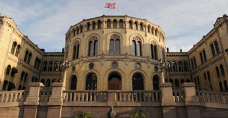

-Et parti med frykt og daddel
Finn ut mer om Sosialistisk Høyreparti

Partilederen!
Til stiftelsen av partiet trengtes det en leder som er vant til å holde seg i sentrumspolitikken, og som ikke minst er arbeidsledig. Jobben falt naturligvis på Knut Arild Hareide, tidligere leder i Krf.Vi trenger DIN mening!
Slagplanen legges!

I løpet av de første månedene av 2019 vil Hareide samle et team og planlegge SHs fremtid. Planen vil være klar før Hareide går av som leder for KrF og veien videre kan begynne.
Ambisjonene

Som et nytt parti vil SH trenge litt tid til å få etablert seg i den norske politikken. De ideologiske forskjellene fra de andre partiene kan gi en treg start for kampen om velgerne, men håpet er å få inn representanter på stortingen i vaglet i 2025.